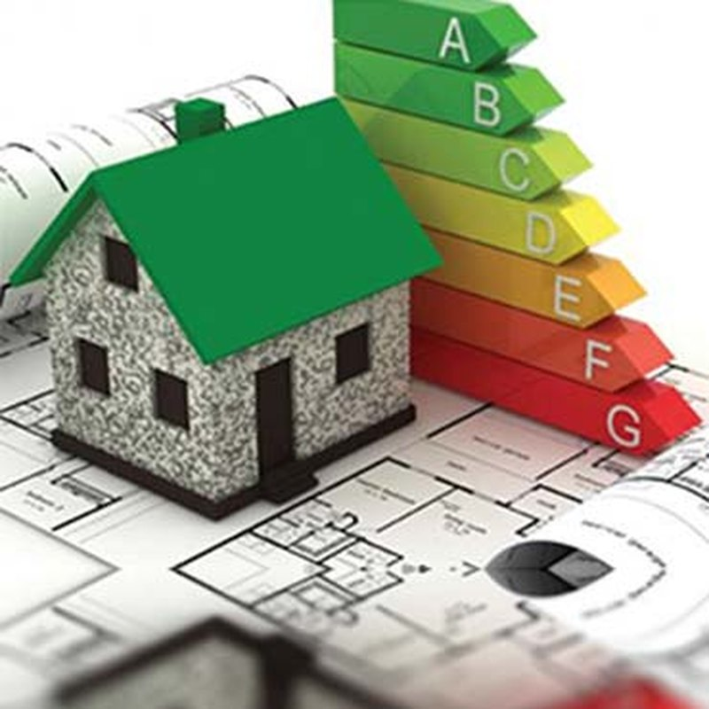

Yanmazlık
BYKHY'nin istediği A1 sınıfı yanmaz malzeme kullanımını karşılar. Yangının gelişimine neden olmaz, aksine geciktirir.


Atatürk Mah. Turgut Özal Bulvarı 42 A Ada Gardenya 7/1 Plaza K:6 D:42 Ataşehir / İstanbul
+90 216 455 86 63 · info@ulusalyapi.com
Volkanik bir kayaçtan gelen hafiflik. Perlitli sıva, şap ve tarım perliti çözümleriyle yapınızı ısıya, sese ve ateşe karşı doğal yoldan koruyoruz.

Perlit, asidik bir volkanik camdır. Isıyla genleşme özelliği olan, genleştirildiğinde çok hafif ve gözenekli hâle geçen bir kayaçtır. Genleşme sırasında yapısında milyonlarca kapalı hava hücresi oluşur; ısı ve ses yalıtımını sağlayan da bu gözenekli yapıdır.
Doğal bir maden olduğu için kanserojen madde içermez, kendi karbon salınımını yapmaz. Isıtma ve soğutma ihtiyacını düşürerek binanın toplam karbon ayak izini azaltır.

BYKHY'nin istediği A1 sınıfı yanmaz malzeme kullanımını karşılar. Yangının gelişimine neden olmaz, aksine geciktirir.
Doğal maden olması sebebiyle kanserojen madde içermez. Kendi karbon salınımını yapmaz; ısıtma-soğutma yükünü düşürür.
Düşük ısı iletkenliği ile ısı yalıtımı, gözenekli yapısıyla ses yalıtımı sağlar. Su itici özelliğiyle bünyesine su almaz.
Hafifliğiyle kolay taşıma ve istifleme. Dış cephede kara sıva, iç cephede alçı sıva gibi; el veya makine ile uygulanır.
01Çimento esaslı ve perlitli, manuel veya makine ile uygulanabilen, ısı ve ses yalıtımı sağlayan sıva harcı. Tuğla, beton, briket ve gaz beton yüzeylerde kullanılır.
02El ve makine ile uygulanabilen, ses ve ısı yalıtımı sağlayan çimento esaslı perlitli hazır sıva harcı. Nefes alan, ses yutucu yapısıyla öne çıkar.
03Isı ve ses yalıtımı sağlayan hafif yalıtım şapı. Seramik, parke ve laminat kaplamaları öncesinde; klasik şaplara göre 5–7 kat daha hafif.
04Seracılık, fidecilik, çiçekçilik, mantarcılık ve topraksız tarımda toprak düzenleyicisi olarak kullanılan, radyoaktif içermeyen hafif malzeme.
| Parametre | Isı Yalıtım Sıvası | İç Sıva | Şap |
|---|---|---|---|
| Kullanım yeri | Dış + iç cephe | İç cephe (kaba sıva) | Teras ve döşeme |
| Renk | Beyaz | Beyaz | Gri |
| Kuru birim yığın ağırlığı | 400 ± 50 kg/m³ | 500 ± 150 kg/m³ | 500 ± 70 kg/m³ |
| Basınç dayanımı | CS II | CS I | C5 · TS EN 13813 |
| Isıl iletkenlik sınıfı | T1 | T1 | — |
| Yangına tepki sınıfı | A1 | A1 | A1 |
| Uygulama kalınlığı | 10 – 30 mm | 15 – 20 mm | 30 – 70 mm |
| Sarfiyat (1 cm) | 4 – 4,5 kg/m² | 4,5 – 5 kg/m² | 5,5 – 6,5 kg/m² |
| Kuruma süresi | 4 – 6 gün | 4 – 6 gün | 4 – 6 gün |
| Ambalaj | 13 kg kraft torba | 16 kg kraft torba | 20 kg kraft torba |
| Raf ömrü | 1 yıl | 1 yıl | 1 yıl |
Depolama: kapalı orijinal ambalajında, serin ve kuru ortamda saklanmalıdır.



Üstlendiği her işi yaparken müşteri taleplerini ve yürürlükteki yasal mevzuat şartlarını karşılayan ürünler sunar.
Yaralanmaları ve sağlık bozulmalarını önlemek için her türlü önlemi alır.
Enerji ve doğal kaynakları en etkin şekilde kullanır; israfı önlemek için çalışır.
Ulusal Perlit, inşaat sektöründe uzun yıllar tecrübesi olan, sektöre hem malzeme üretimi ve tedariği hem de uygulama alanlarında hizmetlerde bulunmuş Ulusal Yapı'nın bir markasıdır.
Yapı sektöründe satış ve uygulamayı en iyi hizmet kalitesiyle müşterilerimize sunmak; kurumsal ve ilkeli yaklaşımımızla sektörde fark yaratmak.
Çağdaş ve yenilikçi yapımızla, faaliyet gösterdiğimiz sektörlerde daima en iyisini gerçekleştirerek çalışanlarımıza, müşterilerimize ve ülkemize katma değer sağlamak.

Uygulama alanınızı ve metrekarenizi paylaşın; sarfiyat hesabı ve teklifle birlikte dönelim.
Teklif Alın